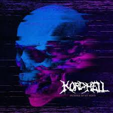

Aqui Sabras Mas De Uno De Los Mejores Generos Musicales
Te contaremos a detalle cosas muy interesantes de este genero como:
Que es
Porque es tan bueno
Que tipos o subgeneros tiene
Sus mayores referentes
-
Recomendaciones para que te adentres en este hermoso genero
Esperamos que lo disfrutes tanto como nosotros y millones de personas mas.
¿Que es el Phonk de donde viene?
-
Es un subgenero del Memphis Rap combinado con generos mas actuales como el Trap o Tecnho, House etc.
-
El Phonk proviene o fue realizado en principio para carreras clandestinas en Rusia, Japon dandole esa vibra underground al ser un genero de nicho en sus inicios pero esto fue cambiando en armonia con la evolucion del mismo.
¿Porque Es Tan Unico Y Bueno?
-
Al ser un subgenero de tantos otros tiene una variedad de composicion increible con variedad de drums y sonidos dandole una capacidad de cambio imensa y seguir siendo el mismo genero lo unico necesario para ser categorizado como Phonk es que posea los famosos Bells (Campanas) la cual es su base y hace de sus melodias unicas en todo el mercado musical.
-
Fue un genero de nicho pero su expansion fue imensa llegando a muchos productores que se enamoraon del genero dandole su variedad caraxteristica y deribando mas tipos de Phonk que el inicial el cual es el Drift.
-
Sus melodias incentivan emociones fuertes Para situaciones duras como entrenar o estar concentrado, dar motivacion y tambien por su flexibilidad escucharlo en momentos bulnerables de calma o simplemente para disfrutar.
¿Que Tipos De Phonk Existen?
Drift Phonk
Como te contamos fue el primero es caracterizado por ser producido a altos BPM para dar el sentimiento de adrenalina a los corredores y para dar una fuerza y emocion sin precedentes.
Chill Phoonk
Esta hermosura salio de la innovacion de los productores al darse cuente que los Bells al ser un sonido mayormente agudo y tranquilizante a BPM bajos lo aprovecharon para crear este tipo de Phonk que da emocion de calma, tristeza, reflexion y no tiene porque tener los BPM bajos solo tener el ambiente y melodias adecuados.
Referentes
En el Phonk hay dos grandes referentes que destacan sobre los demas y se da la casualidad que cada uno se especializa en un tipo de Phonk de lo mencionados anteriormente y ellos son:
Kordhell
El mayor referente del Drift Phonk haciendo canciones totalmente legendarios y de un ritmo que solo el tiene de hecho compuso la cancion con mas vistas del genero siendo Murder In My Mind con 1200 millones de vistas una locura el padre del Drift Phonk.
Otros grandes del genero serian:
$werve
Pharmacist
Ariis
Sxmpra
Raizhell
Moondeity
Dxrk
Ghostface Playa
Mista Playa
Shadxwbxrn
Disaster
Entre muchisimos mas.
Dvrst
El mayor referente del Chill Phonk con unas melodias tan envolventes y unicas que hcen volar a mas de uno teniendo al igual que Kordhell un sonido tan caracteristico que son inconfundibles compositor del segundo tema mas escuchado del genero Close Eyes con casi 100 millones de vistas
Otros grandes del genero serian:
KahosLan
Interworld
Hensson
Wilee
NBSPLV
XdrianGM
CYPARISS
Killanoia
VOJ,Narvent
Entre muchos mas.
Recomendaciones
Te vamos a recomendar 5 canciones de cada tipo para que las escuches y disfrutes
Drift Phonk
Chill Phonk
Con estos tremendos temas seguro te enganchas si quieres conocer mas phonk busca playlist en spotify sigue a los creadores que te mencionamos y a Driftear o Volar como prefieras.
Si quieres saber mas de este genero suscribete para que te mantengamos al tanto
Suscribete